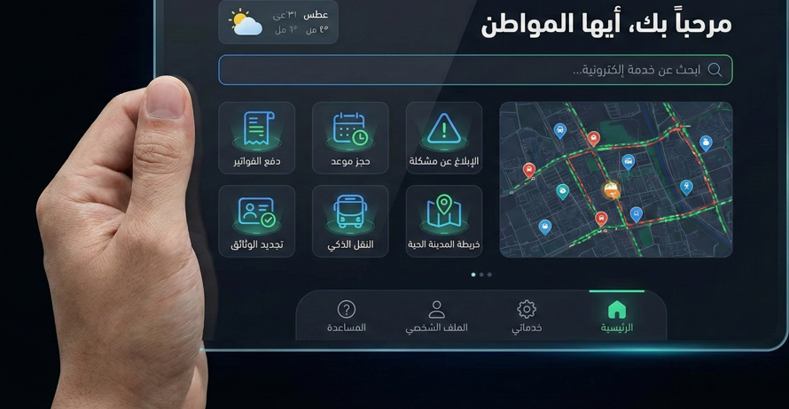
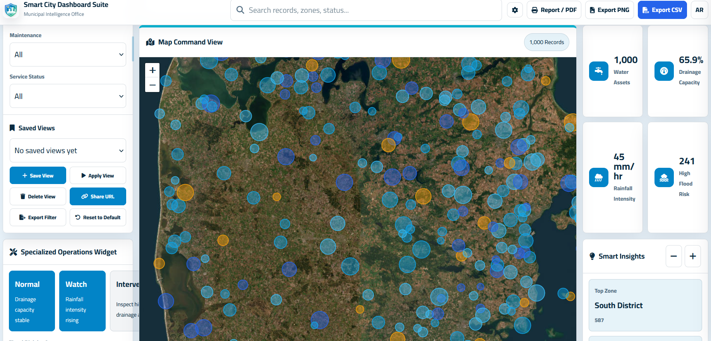

Field Data Collection System
Connecting field teams, photos, attributes, and GIS dashboards in one workflow.
A practical system for municipalities and companies that need faster updates, cleaner records, and less paper-based field reporting.
Problem
Field teams needed a unified way to collect observations, photos, coordinates, and attributes, then push them into a map-linked workflow for review and reporting.
My Role
Designed structured forms, normalized required fields, connected submissions to GIS layers, and prepared monitoring views for managers and technical supervisors.
Workflow
- Define field forms and required validation rules.
- Prepare collection templates for houses, services, activities, complaints, and maintenance notes.
- Link records to maps, attachments, and status tracking.
- Build dashboard summaries for daily and weekly review.
- Publish a public-safe sample without personal information or exact sensitive records.
Results / Impact
1,100+activities documented
5,629houses organized spatially
Livedashboard-ready updates
Visual Proof

